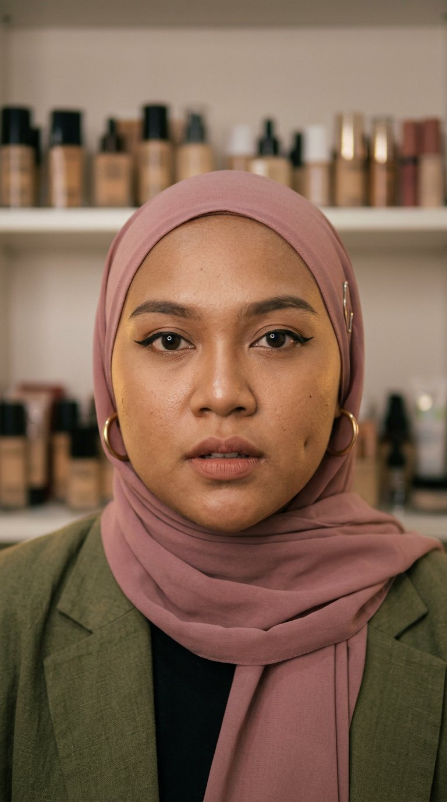

Take ini dihasilkan dengan suara terpilih. Subtitle mengikuti estimasi waktu — sesuaikan setelah render final.
Dipilih sebagai konten pertama karena punya tiga pemicu dalam 4 detik: pengakuan pribadi, rahasia industri, dan identifikasi diri. Tidak menyebut satu produk pun — aman untuk fase uji tanpa promosi.
Medium close-up, cincin lampu 45°, rak 40 shade di belakang dibuat buram. Tanpa filter. 6–8 jump cut, ritme memendek di bagian tips. Pakai frame assets/frames/alya-01-hook.jpg.
Kalimat pertama bukan pertanyaan dan bukan janji — ia pengakuan. Pengakuan memaksa orang berhenti karena mereka ingin tahu apa yang dilakukan orang ini selama 6 tahun.
Jangan menaikkan volume saat marah. Jangan menambahkan musik dramatis. Jangan tersenyum di detik 3–5. Tiga hal itu mengubah pengakuan menjadi teater.
Tidak ada merek, tidak ada link, tidak ada klaim khasiat. Hanya pengalaman pribadi + fakta yang bisa diverifikasi. Tetap pasang label AI-generated profile.
6 TAHUN JUALAN FOUNDATION → “INI UDAH PALING GELAP, KAK” → BUKAN SALAH KULITMU → KAMU PERNAH DIBILANG INI?